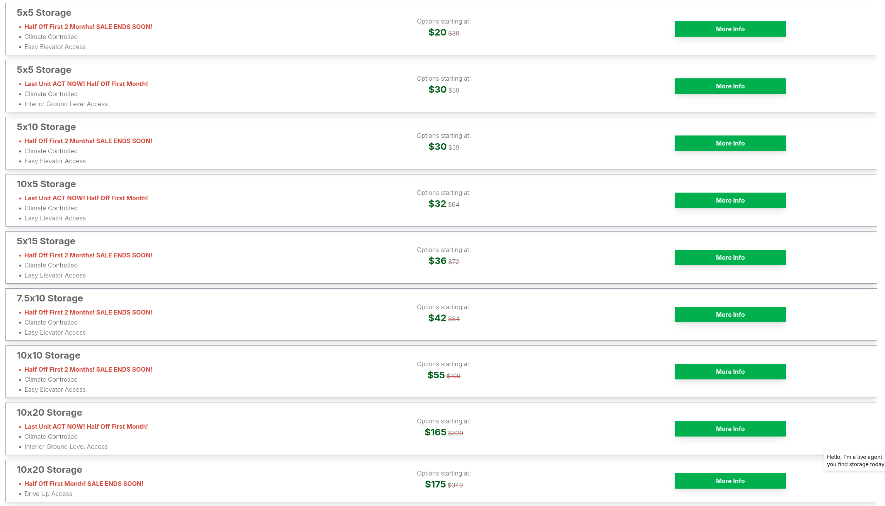
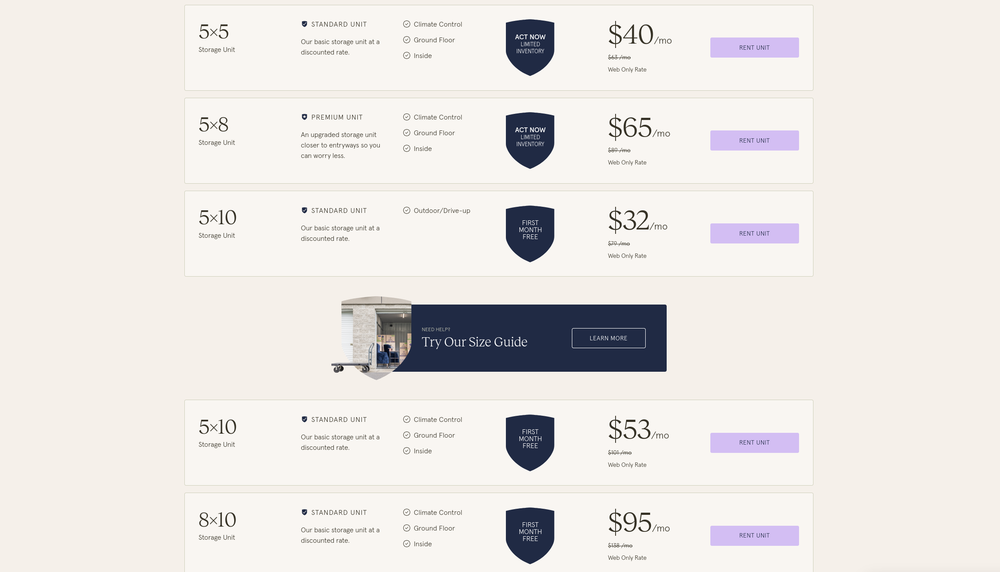
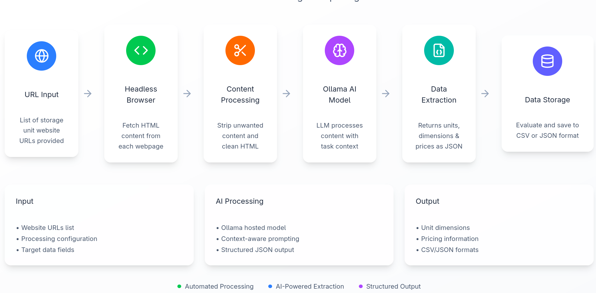

Improving Pricing Coverage of Small Chains using LLMs
A proof of concept; status & next steps
The Problem
- Many small chains
- Difficult to create many small individual scrapers (diminishing returns)
The Idea
- Using LLMs to create automated scrapers that can pick up the pricing info
This concept can be spread to other domains wherever the data is semi-structured or structured.

Extracted Data
| Size |
Price |
| 5x5 | 20 |
| 5x5 | 30 |
| 5x10 | 30 |
| 10x5 | 32 |
| 5x15 | 36 |
| 7.5x10 | 42 |
| 10x10 | 55 |
| 10x20 | 165 |
| 10x20 | 175 |

Extracted Data
| Size |
Price |
| 5x5 | 40 |
| 5x8 | 65 |
| 5x10 | 32 |
| 5x10 | 53 |
| 8x10 | 95 |
In total there are more than 10,000 such sites. We implemented a PoC that ran on 100 randomly selected sites.
Key Findings
- LLMs can extract structured data
- Automation reduces engineering effort
- Works across many domains
Comparison Table
| Manual |
Mistral 7B |
Gemma 3 1B |
Gemma 3 4B |
| Price | Length | Width |
Price | Size |
Price | Size |
Price | Size |
| 56 | 8 | 10 | 56 | 8 × 10 | 49 | 5 × 15 | 56 | 8 × 10 |
| 59 | 10 | 10 | 59 | 10 × 10 | 51.5 | 5 × 5 | 59 | 10 × 10 |
| 77 | 10 | 14 | 77 | 10 × 14 | 54.5 | 5 × 10 | 77 | 10 × 14 |
| 122 | 10 | 30 | 122 | 10 × 30 | 62 | 5 × 10 | 122 | 10 × 30 |
| 70 | 5 | 5 | 70 | 5 × 5 | 68 | 5 × 15 | 70 | 5 × 5 |

URLs from DB
Browser automation
Local LLM models
Data extraction
Where PoC Fails to Deliver
- URLs in the DB that do not point to pricing page
- Content that is dynamically loaded using JavaScript
- Complex designs that confuse the models
If optimised, hallucinations induced due to these factors can be reduced.
Going from the PoC to the product
- Improving headless browser to asynchronously load content
- Improving headless browser to click pricing button if prices are not present on the page
- Store hashes of the website to skip unchanged websites
- Optimise the prompt given to LLM to better extract the data
Thank You!
Questions & Discussion